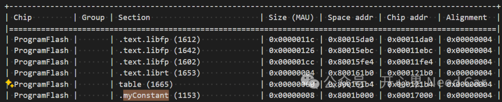
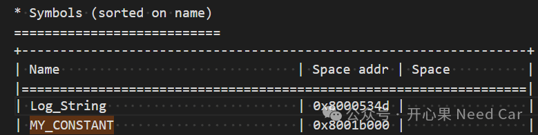
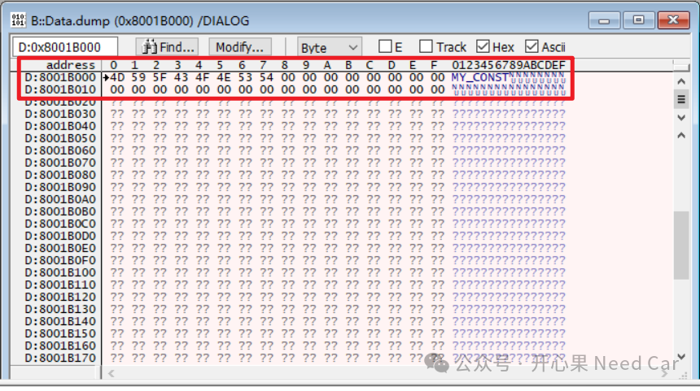

开心果 Need Car · 2024-05-28T08:10:00+08:00 · 微信原文
1、将常量放入指定PFlash地址空间的操作
......section_layout :ARM:linear{group ( ordered, run_addr=HSM_MYCONSTANT_ADDRESS ){select ".myConstant";}}......
在Section中定义一个Group，且指定起始的PFlash地址为0x8001B000，将目标段（eg：.myConstant）放入该Group中。
注意：Section_layout指定了ARM内核的内存空间，如果是其他的Core架构，引用的内存空间可能不同，注意区别。
（二）在源文件（*.c）中定义要设置的常量
举例：在源文件（*.c）中定义要存储的常量MY_CONSTANT，用修饰符const修饰，并将常量放入指定的Section（本文：.myConstant），示意如下所示：
__attribute__ ((section (".myConstant")))const char MY_CONSTANT[8] ={'M','Y','_','C','O','N','S','T'};



往期精彩回顾